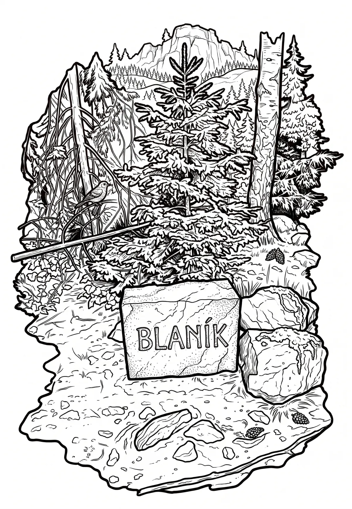

Blaník
Středočeský kraj · 638 m n. m.

přírodní památka · #005
Památná hora Velký Blaník (638 m n. m.) je středem a nejvyšším bodem území Podblanicka, které je nejčastěji vymezené jako nejbližší okolí této hory. Dalším významným bodem tohoto území je vrch Malý Blaník (580 metrů). Oba tyto vrchy jsou známé především díky své bohaté historii a pověstem o blanických rytířích, kteří pod Blaníkem spí společně s knížetem Václavem.